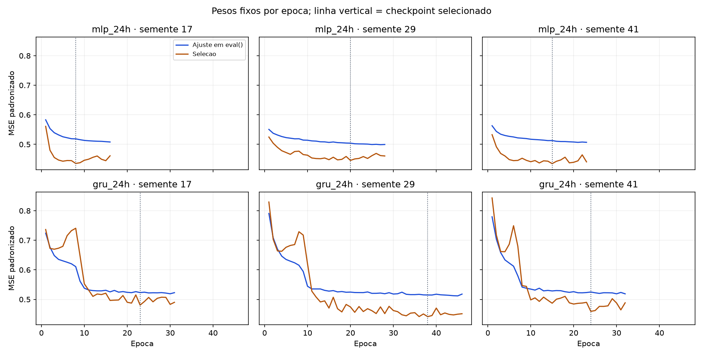

Execucao 20261115T164955Z_5e435b09. CPU, 2 threads; janela 24h, horizonte 24h, atraso assumido 2h.
Semana de desenvolvimento ja examinada. Nenhuma semente foi escolhida pelo desempenho abaixo. Esta tabela nao certifica generalizacao, causalidade ou superioridade em outros periodos.
| method | seed | rows | mae_mwmed | rmse_mwmed | bias_observed_minus_predicted_mwmed | parameters | training_seconds |
|---|---|---|---|---|---|---|---|
| persistence_d2 | — | 168 | 37.991646 | 55.434342 | -3.016872 | — | 0.000000 |
| linear_24h | — | 168 | 33.678664 | 44.938111 | 15.148681 | 25.0 | 0.010966 |
| hgb_24h | 17.0 | 168 | 32.323956 | 44.221683 | 13.119039 | — | 2.086653 |
| mlp_24h | 17.0 | 168 | 32.724828 | 44.019866 | 10.655947 | 833.0 | 14.414265 |
| mlp_24h | 29.0 | 168 | 33.700811 | 44.892316 | 12.652757 | 833.0 | 17.917938 |
| mlp_24h | 41.0 | 168 | 33.159788 | 44.069511 | 13.724280 | 833.0 | 15.210281 |
| gru_24h | 17.0 | 168 | 35.675970 | 45.200733 | 18.525120 | 929.0 | 46.327811 |
| gru_24h | 29.0 | 168 | 34.911227 | 43.816199 | 17.993098 | 929.0 | 45.955027 |
| gru_24h | 41.0 | 168 | 34.573202 | 43.066020 | 14.777710 | 929.0 | 34.519133 |

O tempo inclui treino e avaliacoes de ajuste/selecao em cada epoca; nao e benchmark controlado entre plataformas.
Memoria: {'peak_mib': 396.28125, 'source': 'Windows GetProcessMemoryInfo PeakWorkingSetSize', 'scope': 'whole process lifetime; not per-model memory', 'error': None}
Consulte particoes.csv, janelas_avaliacao.csv, curvas.csv, predictions.csv, protocol.json e resultado.json.